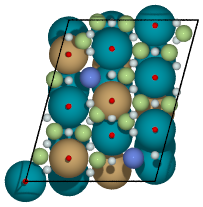

CatKit: Catalysis Kit¶

Welcome to CatKit! A staging ground for computational tools which are generally useful for catalysis research. The goal of the project is to provide a communal location for those interested in hosting such tools under a common banner. In doing so, we hope to provide the infrastructure to produce more advanced functionality based on modular components of individual contributors.
Contents¶
- catkit
- catkit package
- Subpackages
- Submodules
- catkit.build module
- catkit.db module
- catkit.gratoms module
- catkit.learn module
- Module contents
- catkit package